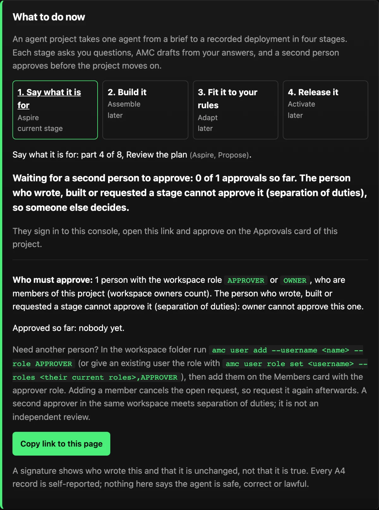

A first draft of your project
Start an agent project in A4 Forge from a pack and AMC fills in the sector, a risk level and the rules to check. They are suggestions: you correct them before anyone approves.
Industry Packs · Health
For work such as health records, wellness, patient care, clinical decisions, medicines and trials. Start your agent project from the Industry Pack closest to the work: it names the rules to check and the risks to plan for, and gives you a first draft to correct.
A pack is a questionnaire for one kind of regulated work. You never start from a blank page, and nothing in it is decided for you.
Start an agent project in A4 Forge from a pack and AMC fills in the sector, a risk level and the rules to check. They are suggestions: you correct them before anyone approves.
Each pack lists laws and standards that may apply to the work, and the risks to plan for. Check every rule with your own advisers: a pack does not say which ones apply to you.
Each pack asks plain questions about how your agent is run. Your answers are self-reported: AMC records them as you gave them and does not check them.
Each card shows the pack's own words: what it covers, its risk level, the rules it names and the risks it lists.
Industry Pack · 22 questions
Individual health data ownership from birth to death — covering hereditary, congenital, and socially acquired health information with emphasis on interoperability, patient consent, data portability, and longitudinal health record integrity.
Industry Pack · 18 questions
Physical, emotional, and professional wellness — covering body performance optimization, mental health support, occupational wellness, and preventive health with emphasis on sensitive data protection and evidence-based interventions.
Industry Pack · 18 questions
Appointment through investigation, diagnosis, treatment, care, and prognosis — covering the complete patient journey with emphasis on clinical safety, informed consent, care coordination, and outcome measurement.
Industry Pack · 16 questions
Therapeutic, surgical, psychoanalysis, and alternative medicine — covering clinical practice modalities with emphasis on evidence-based practice, patient safety, clinical governance, and treatment efficacy monitoring.
Industry Pack · 19 questions
Healthcare professionals — appointments, transcription, billing, and practice management with emphasis on coding accuracy, documentation integrity, and regulatory compliance for healthcare business operations.
Industry Pack · 16 questions
Digital technology in life, learning, and living — covering disease prevention, health technology assessment, and the integration of AI/digital tools into daily health management with emphasis on safety, efficacy, and equitable access.
Industry Pack · 18 questions
Biological research, molecules, drug and therapy production — covering the drug discovery pipeline from target identification through lead optimization, preclinical development, and manufacturing with emphasis on data integrity, reproducibility, and regulatory compliance.
Industry Pack · 16 questions
Drug and therapy testing, efficacy assurance, and participant management — covering the clinical trial lifecycle from protocol design through participant recruitment, data collection, analysis, and reporting with emphasis on participant safety, data integrity, and regulatory compliance.
Industry Pack · 18 questions
Prescription delivery, medicine administration, and payor disintermediation — covering pharmacy operations, medication dispensing, specialty drug management, and direct-to-patient pharmaceutical services with emphasis on drug safety, supply chain integrity, and equitable access.
Build AMC from source (see Get AMC). The published 1.1.1 release does not have A4 Forge, and it still locks the packs behind the earlier licence gate.
amc in a terminal and choose Build an agent for my industry. AMC opens the Compass Console in your browser, at the form that starts a project. Sign in if it asks.
The whole build needs three people: Assemble's final approval, Adapt and Activate each need two approvers who did not write, build or ask for that step, and Adapt's final approval needs an auditor. On a laptop a project ends after Adapt. In a terminal, amc domain pack run --pack <id> asks a pack's questions without starting a project. How A4 Forge works